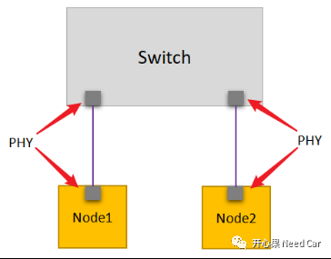
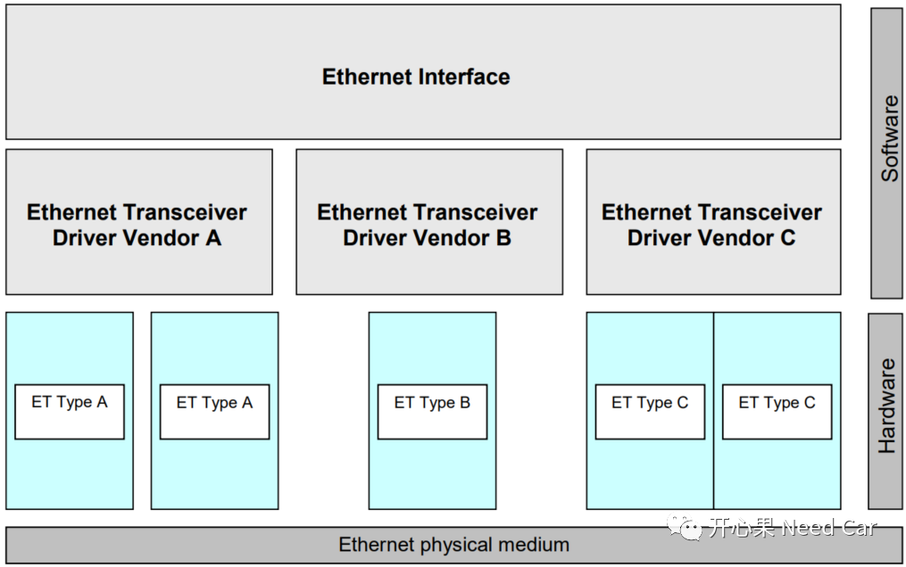
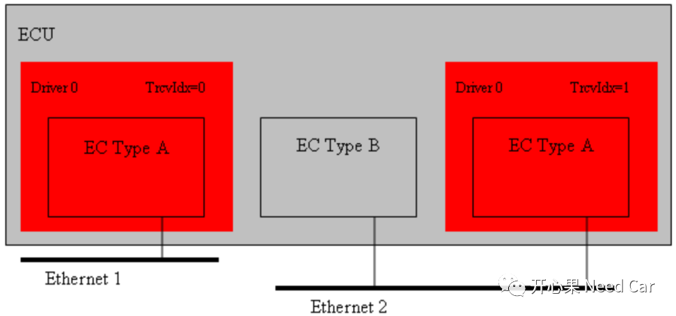
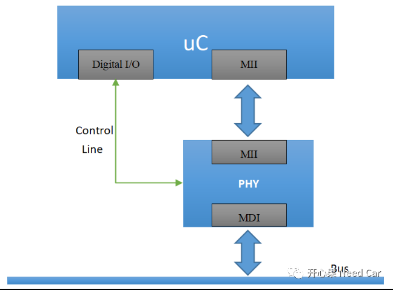
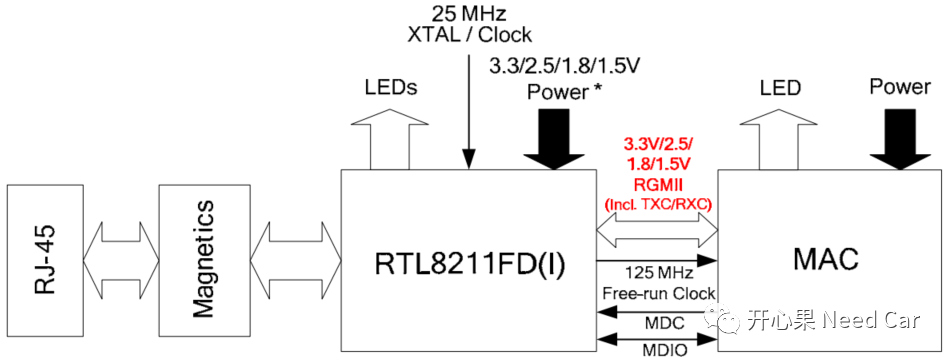
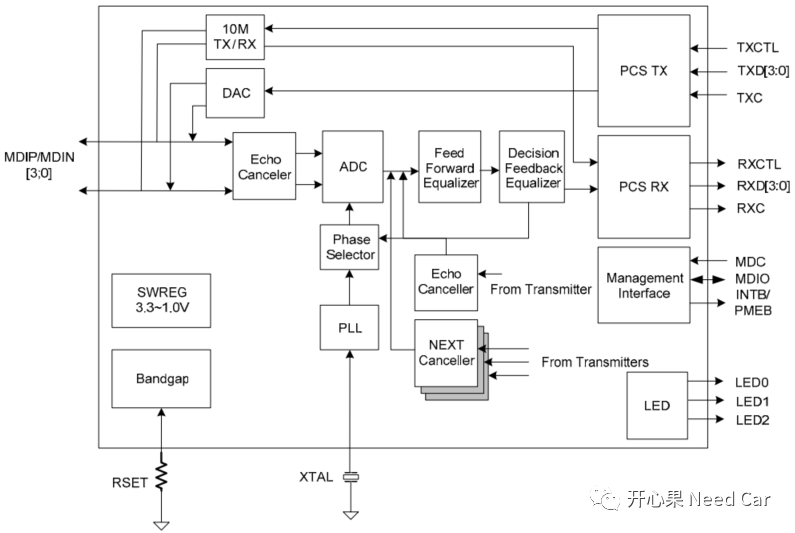

开心果 Need Car · 2022-01-20T20:22:00+08:00 · 微信原文
Transceiver是数字信号与模拟信号转化的物理硬件，如果对使用的Transceiver没有一定的认识，那么在Bug的排查中，往往会有种似懂非懂的感觉，来，认识以太网，从认识Ethernet Transceiver开始。
重要提示，Vector的E-Learning，对总线的入门学习很有帮助，链接：
https://elearning.vector.com/
名词解释
| Name | Description |
| EC | Ethernet controller |
| ET | Ethernet transceiver |
| Eth | Ethernet Controller Driver (AUTOSAR BSW module) |
| EthTrcv | Ethernet Transceiver Driver (AUTOSAR BSW module) |
以太网基础概念

Ethernet BSW栈

在Autosar中，不同类型的Ethernet Transceiver索引均从0开始索引，如下所示：


RTL8211FD(I)
https://files.pine64.org/doc/datasheet/rock64/RTL8211F-CG-Realtek.pdf
1、Pin描述/MDI
阅读Transceiver Datasheet，先搞清名词：
| Name | Description |
| I | Input |
| O | Output |
| P | Power |
| G | Ground |
| PU | Internal Pull Up During Power On Reset |
| PD | Internal Pull Down During Power On Reset |
| LI | Latched Input During Power up or Reset |
| IO | Bi-Directional Input and Output |
| OD | Open Drain |
2、RTL8211FD(I)结构图

RTL8211FD(I)内部原理图如下所示：

好了，不能再多说了，吃多嚼不烂，下期更精彩...
往期精彩回顾